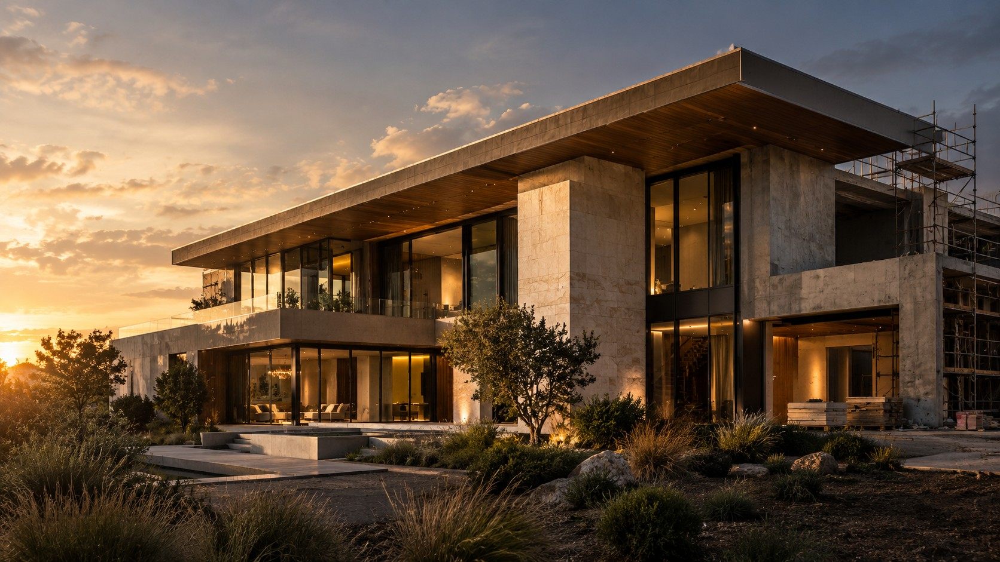

House on the Ridge
A quieter kind of statement, made in stone and light.
Thoughtful architecture. Considered construction. Enduring spaces, made with intent.

They make everyday life feel better. We bring architecture, construction and interior thinking together to create places with a clear point of view—and the craft to bring it to life.
Get to know our approach ↗A selection of imagined residential, commercial and interior projects—each with its own story, material language and purpose.
A quieter kind of statement, made in stone and light.
Warm minimalism with room to breathe.
A considered home for ideas and collaboration.
Private outdoor living, shaped around daylight.
From the first sketch to the final finish, we connect the moving parts and keep the bigger picture in view.
Concept design, spatial planning, architectural development and design coordination.
Project coordination, construction delivery, quality oversight and considered execution.
Material palettes, bespoke joinery, lighting concepts and interiors with a clear identity.
Thoughtful upgrades that unlock potential and give existing spaces a new direction.
Great work is rarely an accident. It's the result of listening closely, asking better questions and caring about the decisions most people never notice.
Tell us what you're imagining. We'll start with a conversation, not a sales pitch.
Start a project enquiry ↗M / S